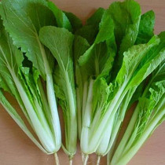

豆渣食谱
豆渣同学从菜鸟通往家用厨子的进阶之路。
清炒小白菜

步骤：
- 小白菜切段， 洗净， 水沥干。
- 点火， 热油， 油不要太多（深度半指左右？）。
- 油热后放点花椒， 蒜。
- 倒入小白菜（水沥干），中大火翻炒， 放点蚝油，放盐。
5。几分钟后出锅。
冬瓜海米汤
步骤:
- 海米洗洗, 太干的话放水里泡软.
- 冬瓜切块.
- 锅里放少许油, 热了之后放入海米炒一会.
- 倒入冬瓜, 倒入一点水, 然后慢炖(不用倒太多水, 冬瓜会出水).
- 冬瓜软了之后出锅.
清炒娃娃菜
- 娃娃菜切细条洗净.
- 开火倒油, 油微热后放八角, 蒜.
- 放入娃娃菜. 加蚝油,生抽.
- 娃娃菜炒软出锅.
羊肉片面
- 热油, 油微热放入葱煎一会.
- 倒入甜面酱一小勺, 蚝油少许.
- 倒水.
- 水开后放入面条.
- 放入孜然少许.
- 快出锅时放青菜,鸡蛋西红柿等附加菜.
腌黄瓜
- 新鲜黄瓜切条, 撒盐.
- 板子倾斜空水.
- 腌半个小时左右.
- 锅里放黄豆酱油和水(1:2), 放花椒, 大料. 然后煮开, 凉凉.
- 放点姜片.
- 热点花椒油. 凉凉.
- 先把黄瓜放瓶子里.
- 在放酱油.
- 再放油.